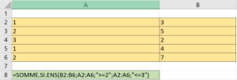

Fonctions NB.SI, NB.SI.ENS, SOMME.SI et SOMME.Si.ENS
NB.SI
Compte le nombre de cellules à l'intérieur d'une plage qui répondent à un critère donné.
Syntaxe : NB.SI(plage;critère)
"Plage" représente la plage de cellules dans laquelle vous voulez compter les cellules. ;
"Critère" représente le critère, exprimé sous forme de nombre, d'expression ou de texte, qui détermine les cellules à compter.
Exemple : Exemple 1 :
Dans la cellule A8, la formule est =NB.SI(A2:A6;2). On recherche les valeurs égales à 2 dans la plage de cellule allant de A2:A6. Les valeurs comptées seront dans la plage A2:A6 sur les lignes vérifiant le critère égal à 2.
Le nombre de cellules comptées sont en colonne A et sont à la ligne 3 et 6. Le résultat est donc 2.

Exemple : Exemple 2 :
Dans la cellule A8, la formule est =NB.SI(A2:A5;"pommes"). On recherche le nombre de cellules contenant le mot "pommes" dans la plage de cellule allant de A2:A5. Les valeurs comptées seront dans la plage A2:A5 sur les lignes vérifiant le critère égal à "pommes".
Le nombre de cellules comptées sont en colonne A et sont à la ligne 2 et 5. Le résultat est donc 2.

NB.SI.ENS
Compte le nombre de cellules à l'intérieur d'une plage qui répondent à un critère donné.
Syntaxe : NB.SI.ENS(plage_critères1; critère1; [plage_critères2; critères2]...)
"Plage" représente la plage de cellules dans laquelle vous voulez compter les cellules. ;
"Critère" représente le critère, exprimé sous forme de nombre, d'expression ou de texte, qui détermine les cellules à compter.
Exemple : Exemple avec deux critères :
Combien de fois a-t-on vendu plus de 40kg de pommes?

SOMME.SI
La fonction SOMME.SI permet de calculer la somme des valeurs d'une plage qui répond au critère spécifié.
Syntaxe : SOMME.SI(plage_critère; critère;plage_somme)
"Plage_critère" représente la plage de cellules dans laquelle vous voulez chercher le critère. ;
"Critère" représente le critère, exprimé sous forme de nombre, d'expression ou de texte, qui détermine les cellules à additionner. ;
"Plage_somme" représente la plage de cellules contenant les valeurs à additionner.
Exemple : Exemple 1 :
Dans la cellule A8, la formule =SOMME.SI(A2:A6 ;"=1";B2:B6) recherche les cellules de la plage A2:A6 contenant la valeur 1 et additionne le contenu des cellules de la plage B2:B6 auxquelles s'appliquent le critère. La fonction trouvera le critère 1 dans les cellules A1 et A5, le résultat est donc l'addition des valeurs contenues dans les cellules B1 et B5 : 3+4=7

Exemple : Exemple 2 :
Dans la cellule A8, la formule =SOMME.SI(A2:A5 ;"=1";B2:B5) recherche les cellules de la plage A2:A5 contenant la valeur "pommes" et additionne le contenu des cellules de la plage B2:B5 auxquelles s'appliquent le critère. La fonction trouvera le critère "pommes" dans les cellules A2 et A5, le résultat est donc l'addition des valeurs contenues dans les cellules B2 et B5 : 32+86=118

Syntaxe : SOMME.SI.ENS(somme_plage, plage_critères1, critères1, [plage_critère2, critères2], ...)
La fonction SOMME.SI.ENS Additionne des cellules spécifiées si elles répondent à un ou plusieurs critères donnés.
Exemple : Exemple avec deux critères :
Dans cet exemple, on effectue la somme des valeurs dans la zone B2:B6 qui ont une valeur comprise entre 2 et 3 dans la zone A2:A6 :